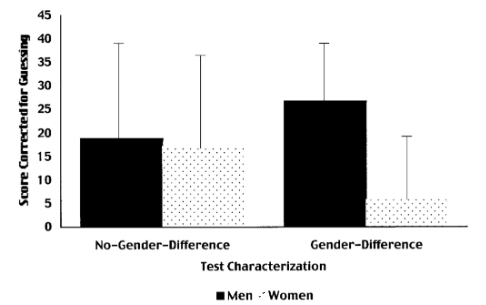

Cultural Blog
I learned something new the other day. Stereotype threat. I hadn't heard of it before, but it makes a lot of sense. But first, what is a stereotype? From the Merriam Webster dictionary, a stereotype is "a standardized mental picture that is held in common by members of a group and that represents an oversimplified opinion, prejudiced attitude, or uncritical judgment." Saying that someone must not be able to dance because they are white is a stereotype. And most stereotypes are negative or hurtful. Even if a certain stereotype is true for one particular person, to insult someone based on some preconceived assumption does not help anyone.
So what is stereotype threat exactly? Stereotype threat is when a person feels fear or anxiety a person (consciously or unconsciously) when they believe they might confirm a negative stereotype due to belonging to a certain social group. This anxiety leads to performing negatively at certain tasks, creating a self-fulfilling prophecy. And because every group can be stereotyped, whether based on an ethnicity, race, gender, profession, anyone can experience stereotype threat, though minorities deal with it more often.
One noted experiment gave a group of women and a group of men the same difficult math test separately. These candidates were all tested beforehand to make sure their mathematical abilities were about the same, so they should all perform at about the same level. One test group of women was told that this difficult math test was testing the gender difference in mathematical ability. When their tests were scored and compared to the mens' tests, they did much worse. However, a second test group of women took the same math test, and beforehand, they were told that they may have heard that women didn't perform as well as men on math tests, but that didn't count for this math test. This test would put them on the same playing field. And this time when their test scored were compared with the mens' tests, they did just as well as the men.  Other experiments have been done that continue to confirm that stereotype threat is a real situational predicament, and it has been increasingly written about, studied, and talked about in academia.
People have assumed a lot of different things about me--because I have tan skin I must be half black and half white, Mexican, Native American, Indian, Israeli (I really don't know where they're getting these from)--but to be honest, I never really felt they were necessarily negative. I'm tired of people assuming things about me when they are most always wrong, but I don't feel like it's really making me "perform" badly. Or maybe I just haven't come across those situations yet. At the same time, I can see how if may and does affect others in certain situations, like at school or work, who have specific negative stereotypes attached to their identity.
In order to combat stereotype threat, we need to build a sense of identity safety in different settings. To feel safe, a person must trust that they're not going to be exposed to negative experiences based on their identity. We need people to feel safe enough to function and thrive without the pressures negative stereotypes. And while stereotypes are an ever prevalent part of society, and they're not likely to go away anytime soon, the best way to reduce their impact is to just recognize that they exist and recognize when you are stereotyping. When you find that you are, take a moment to assess why and make the effort to really show that you value different people and the identities they are connected to. And this is a collective effort. It's up to me, to you, to all of us, to create safe spaces where people don't have have to feel burdened or weighed down by their own identities.
I also want to mention that feeling safe should not be seen as a privilege, but a right. This is similar to using someone's preferred name or pronouns. You don't earn a trophy for respecting them and their identity. It just means you're a decent human being. So why don't we all practice being decent human beings? A lot of the things we're trying to overcome here are being perpetuated by the society we live in, starting at the moment you're born. That makes those ideas hard to change, but we can all make an effort.